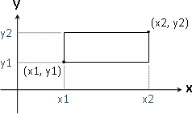
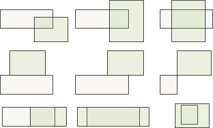
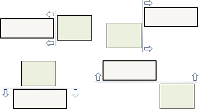
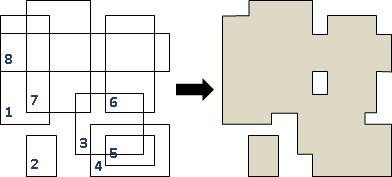
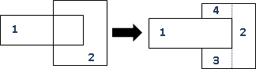
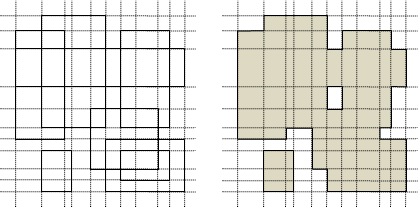

Orthogonal Rectangle
程度★★ 難度★★
擺得很正的矩形，四個邊都平行於座標軸
經過數學課程洗禮，大家看到矩形都是直覺想到長與寬。然而在計算幾何當中，我們傾向紀錄左下角座標（X座標、Y座標的下界）與右上角座標（X座標、Y座標的上界）。
就算矩形退化成線段、點，這種紀錄方式也不會有問題。
UVa 460 191
矩形相交
要判斷矩形相交相當麻煩，相交的情形有許多種。
逆向思考，事情就變得容易多了：判斷矩形不相交！以第二個矩形做為基準，第一個矩形完全落在其左方、右方、下方、上方，就是不相交。
如果是空心矩形，那麼還得偵測第一個矩形是不是被第二個矩形框住。
大量矩形交集
兩個矩形的交集還是矩形（可能退化成線段、點）。運用Incremental Method進行推理，大量矩形的交集當然還是矩形。
採用Incremental Method，一次讀入一個矩形，不斷更新交集。時間複雜度O(N)，N是矩形數量。
【徵練習題】
大量矩形聯集，之一
將聯集區域切割為數個矩形。採用Incremental Method，一次讀入一個矩形，不斷更新聯集。
下面這段程式碼僅計算聯集面積。至於聯集多邊形，就請讀者自行研究了。
時間複雜度的分析比較特別。每次更新聯集，都會增加一些矩形、減少一些矩形，所以很難估計矩形數量。
我們用宏觀的角度來觀察矩形數量。考慮所有矩形頂點，X軸離散化、Y軸離散化，最多產生(2N-1) * (2N-1)個格子。聯集區域一定是由這些格子構成，聯集區域的格子數量一定小於等於(2N-1) * (2N-1)。更進一步，聯集區域切割出來的矩形數量，一定小於等於格子數量！
更新聯集，也就是檢查聯集區域切割出來的每一個矩形，時間複雜度為O(N^2)。一共更新N次，總時間複雜度為O(N^3)。
大量矩形聯集，之二
一、X軸離散化、Y軸離散化。O(NlogN) 最多產生(2N-1) * (2N-1)個小格。 二、窮舉每個小格、窮舉矩形，判斷每個小格屬於哪個矩形。O(N^3)
UVa 870 221 688
大量矩形聯集，之三
一、X軸離散化，附帶矩形左右邊界資訊。O(NlogN) 二、Y軸離散化。O(NlogN) 三、每一個橫條，由左往右掃描，判斷每個小格是否在矩形裡。O(NN) 以矩形上下邊界，判斷其左右邊界是否穿過當前橫條。 遇到矩形左邊界+1，遇到矩形右邊界-1。
大量矩形聯集，之四
觀察相鄰的橫條。相鄰的橫條的聯集區域變化，與矩形的消失、出現密切相關。我們可以運用動態的資料結構，儲存第一個橫條的聯集區域，然後逐步更新每一個橫條。
一、依序處理每個橫條。 首先建立第一個橫條的線段樹，節點附帶sum資訊。 （預先離散化X軸。O(NlogN)） 二、一次做一個橫條。看看哪些矩形離開了/進來了，更新線段樹。 （預先離散化Y軸，附帶矩形上下邊界資訊。O(NlogN)） 三、從頭到尾總共N個矩形離開了/進來了，線段樹更新總共2N次。O(NlogN) 每做完一個橫條，樹根的sum就是該橫條之內的聯集區域面積總和。 每做完一個橫條，就將sum累加至聯集面積。
ICPC 4758
Circle（Under Construction!）
程度★★ 難度★★
圓
【待補文字】
ICPC 4120
圓形交集、聯集
大量圓形交集、聯集
http://www.shuizilong.com/house/archives/圆并/
UVa 10969 ICPC 3532
Triangle（Under Construction!）
程度★★ 難度★★
三角形
UVa 11122 11275 11836
三角形交集、聯集
大量三角形交集、聯集
ICPC 3809
Helly's Theorem
程度★★ 難度★
http://en.wikipedia.org/wiki/Helly's_theorem
一堆凸的東西，交集也是凸的。兩兩之間都有交集，則全部合起來也有交集。